Mitologia griega
La mitología griega se refiere al conjunto de y narraciones que forman parte de la religión de la antigua Grecia. Estas historias mitológicas fueron transmitidas a través de generaciones y tuvieron una gran influencia en la cultura griega, así como en el arte, la literatura y el pensamiento filosófico. Los dioses y diosas griegas eran representaciones antropomórficas de fuerzas naturales y aspectos de la condición humana. El panteón griego estaba encabezado por los doce dioses olímpicos, quienes residían en el monte Olimpo y eran considerados los principales gobernantes del universo. Algunos de los dioses olímpicos más conocidos incluyen a Zeus, el rey de los dioses y dios del cielo y el trueno; Hera, su esposa y diosa del matrimonio y la familia; Poseidón, dios del mar; Afrodita, diosa del amor y la belleza; Apolo, dios del sol y la música; Atenea, diosa de la sabiduría y la guerra justa; y Ares, dios de la guerra. Además de los dioses olímpicos, había numerosos dioses menores, semidioses, ninfas y otras criaturas mitológicas que desempeñaban papeles importantes en las historias griegas. Por ejemplo, los héroes como Hércules (Heracles), Perseo y Teseo eran semidioses que realizaron hazañas heroicas y enfrentaron desafíos sobrenaturales. Las historias mitológicas griegas también incluyeron eventos cósmicos y episodios épicos, como la guerra de Troya, narrada en la "Ilíada" y la "Odisea" de Homero. Estas epopeyas son consideradas obras maestras de la literatura griega y han tenido una gran influencia en la literatura occidental posterior. Es importante mencionar que la mitología griega se desarrollará y evolucionará a lo largo del tiempo, y las historias mitológicas pueden variar en diferentes regiones de la antigua Grecia. Aunque la religión griega clásica ya no se practica, su influencia sigue siendo evidente en la cultura contemporánea, y los mitos y personajes de la mitología griega resulta ser una fuente de inspiración en la literatura, el arte y la cultura popular.

★━━ Principales dioses ━━★
Zeus
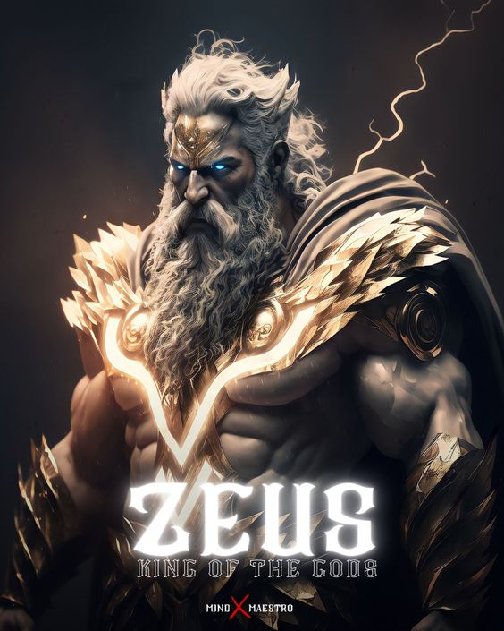Además de ser el Dios del Rayo, Zeus también es padre supremo de todas las deidades y los mortales que habitan la tierra. Es originario de la isla de Creta, donde al nacer fue rescatado de las fauces de su padre, Cronos. De no haber sido por la oportuna intervención de Rea (su madre), Zeus habría sido devorado por su progenitor, al igual que el resto de sus hermanos. Rea escondió y crió a Zeus hasta que este se convirtió en el máximo referente de los Dioses griegos. Sin embargo, hay que tener en cuenta que a pesar de ser el principal dios griego, estaba mucho más humanizado que el Dios judeocristiano, e incluso fue descrito como un oportunista y una entidad dada al engaño (sobre todo adoptando la forma de otros seres).
Poseidon
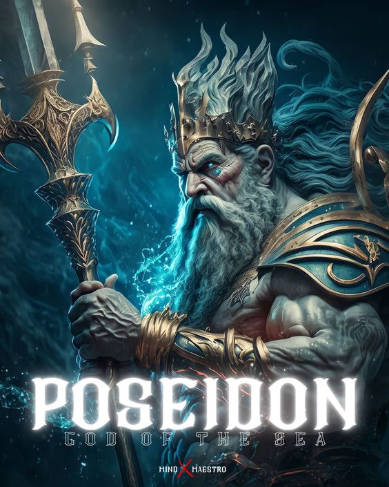Esta deidad tiene el poder de controlar la furia de las aguas, aparte de ocasionar terremotos a placer. Es oriundo de la ciudad de Rodas, donde fue criado por los Telquines (criaturas híbridas marino-terrestres). La leyenda del dios Poseidón es muy parecida a la de su hermano Zeus, fue escondido por su madre en un rebaño de corderos para evitar que su padre, Cronos, lo devorase. Poseidón une fuerzas con Zeus para derrotar a Cronos, y es de esa manera como recibe su famoso tridente, además de la custodia de los mares y océanos.
Hades
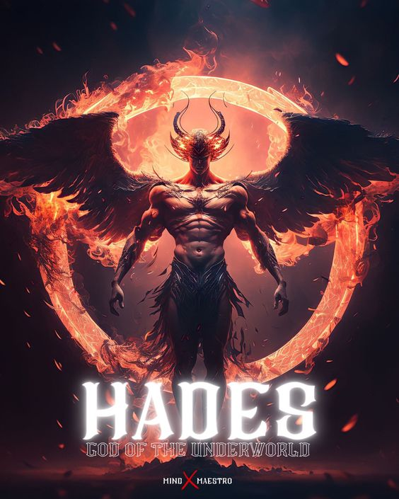Hades era el mayor de los hijos varones del titán Cronos. Fue devorado por su padre, aunque luego sería rescatado de la muerte por Zeus. Uniendo fuerzas con sus hermanos, Zeus y Poseidón, lograron derrotar a Cronos. Juntos se adueñan del universo y lo reparten entre sí, a Hades le fue conferido el inframundo, quedando relegado a una terrible soledad, la cual lo llevó a tomar en cautiverio a la doncella Perséfone (hija de Zeus), para obligarla a contraer matrimonio con él. Suele asociarse con la maldad, pero Hades puede ser visto como un dios noble que siempre, por confuso que pareciera, buscaba mantener en el mundo un equilibrio adecuado entre el bien y el mal.
Hermes
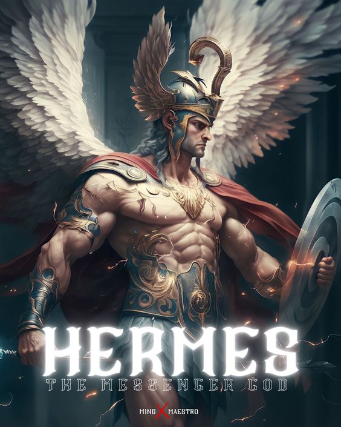Hermes es hijo del Dios Zeus, por su elocuencia y carisma se ganó el título de protector de ladrones y Dios de las fronteras. Nacido en el Olimpo, al igual que su padre tuvo relaciones informales con un gran número de mujeres, dejando así, una vasta descendencia. Su mayor hazaña es la de haber ido al inframundo, por encargo de Zeus, a negociar con su tío (el mismísimo Hades), para que éste dejase en libertad a su hermana Perséfone, lo cual consiguió gracias a su divina retórica.
Hera
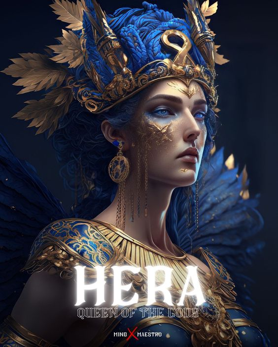Esta deidad era la hermana mayor del todopoderoso Zeus, y al mismo tiempo su esposa. Se le atribuye la responsabilidad de velar por las uniones matrimoniales y los nacimientos, además de brindarles especial resguardo a todas las mujeres. Siempre fue de personalidad noble y muy humana, a pesar de su divinidad. En honor a la Diosa Hera se celebran fiestas llamadas “Matronalia”, las cuales se llevan a cabo el primero del mes de marzo.
Demeter
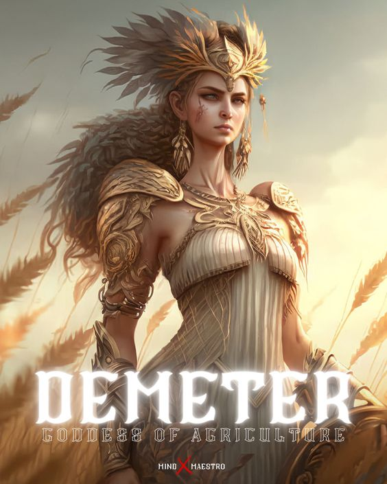Los artesanos tenían a su protector, Hefesto. El Dios del fuego y los trabajos de forja. Es hijo de la Diosa Hera y el todopoderoso Zeus, aunque esto no se tiene demasiado claro. Hay versiones donde se indican que solo es hijo de Hera. Hefesto, a excepción del resto de las deidades nació sin belleza física, su apariencia era tan desagradable al nacer que su madre lo arrojó del Olimpo, y quedó cojo luego de la caída. Fue rescatado del mar por la Diosa Tetis (madre de Aquiles) y criado por esta en la isla de Lemons.
Dioniso
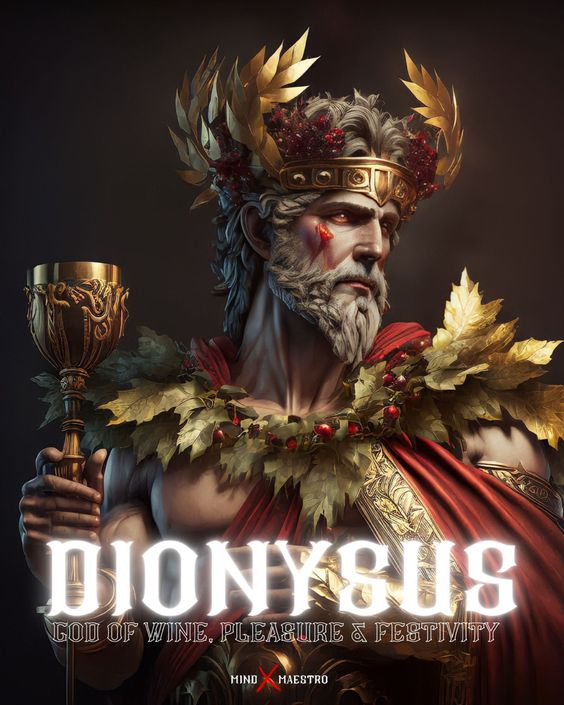En el sentido estricto de la palabra, Dioniso resulta ser un semidiós. Nacido de Zeus con una mortal llamada Sémele, este dios griego también es conocido como el soberano de la agricultura. La leyenda de Dioniso cuenta que este nació dos veces, la primera de forma mortal y la segunda gracias a la divinidad de su padre. En una ocasión Zeus adoptó su verdadera forma, y los rayos que cayeron dieron muerte a Sémele y Dioniso. El todopoderoso dios tomó al niño, y colocándolo en uno de sus muslos le devolvió la Vida.
Atenea
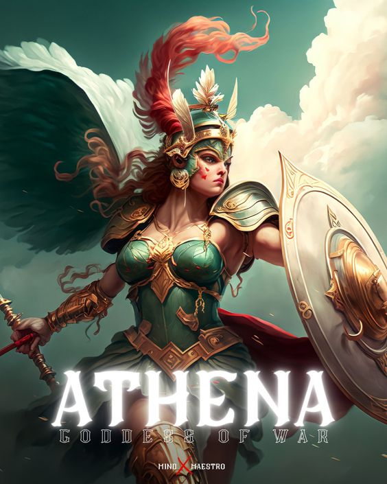Es una de las principales y más influyentes Diosas del Olimpo. Los relatos cuentan que nace directamente de la cabeza de Zeus, una vez que este se tragara a su madre, Atenea surgió con la ayuda de Hefesto, quien abrió la cabeza de Zeus; de ahí sus grandiosas habilidades para las ciencias y la estrategia, dotes que le servían también en el campo de batalla, donde era una guerrera implacable. La Diosa Atenea, en contraparte a su hermano Ares, representa las causas justas..
Apolo
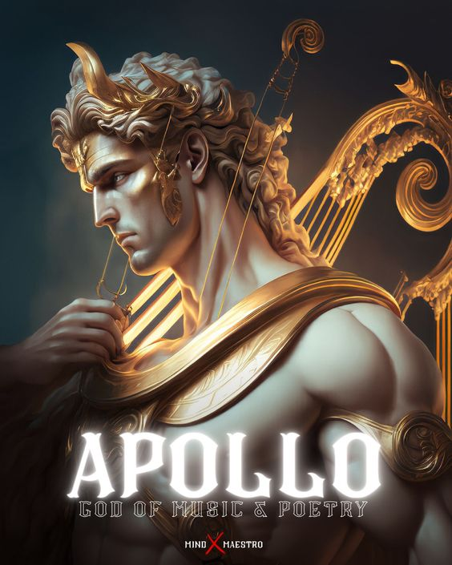En los relatos de la mitología griega, el dios Apolo representa la perfección y la belleza. De los hijos de Zeus, Apolo fue el más influyente de todos ellos. No solo era el Dios del Sol, sino también de las enfermedades y la sanación, de las plagas y de los antídotos contra ellas. Esta Deidad es el equilibrio perfecto entre lo saludable y lo insano. Apolo jugó un papel trascendental durante la Guerra de Troya, cuando el Rey de esta ciudad negara a los Dioses las ofrendas prometidas, fue él quien liberó una peste mortal sobre Troya. Pero su más grande hazaña, sin duda alguna, es haber dirigido la flecha del Príncipe Paris hacia el talón de Aquiles, causándole la muerte.
Artemisa
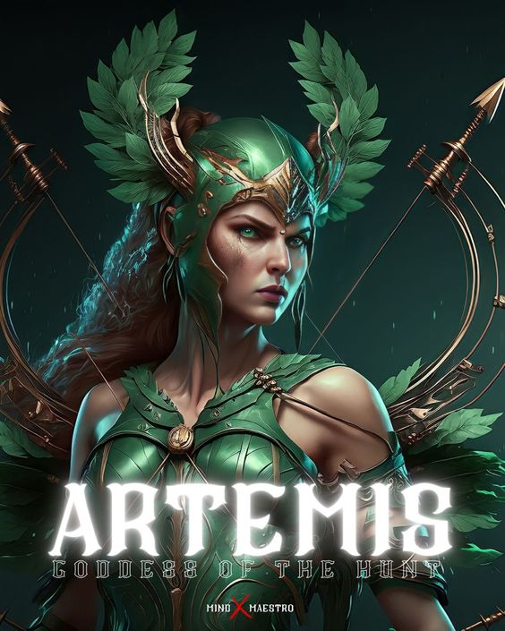Artemisa es la hermana melliza de Apolo. Esta diosa representa alivio para las mujeres durante el parto. Al igual que su hermano Apolo son repudiados por la diosa Hera, ya que ambos provienen de la infidelidad de Zeus. De niña, entre otros antojos, le pidió a su padre que le concediera el regalo de la virginidad eterna, lo cual le fue cumplido. Por tal motivo, Artemisa es una Diosa sin ningún tipo de deseo sexual. Muchos compañeros de cacería, entre ellos el mortal Orión, intentaron robarle la virginidad. Todos ellos, incluyendo a Orión, terminaron muertos a manos de la diosa.
Ares
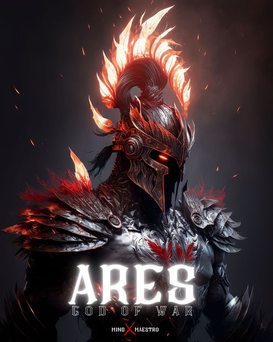Ares es la contraparte de su hermana, la diosa Atenea. Esta deidad representa el instinto más puro y visceral de la guerra, es la violencia en su máxima expresión. Es fundador de la ciudad de Tebas, donde habitan los espartanos. A pesar de ser el Dios de la guerra, Ares fue derrotado en varias ocasiones por su hermana Atenea. También es conocida la anécdota de cuando fue herido por el héroe Diomedes y tuvo que regresar al Olimpo para sanar, dejando a los troyanos sin su ayuda durante la guerra.
Afrodita
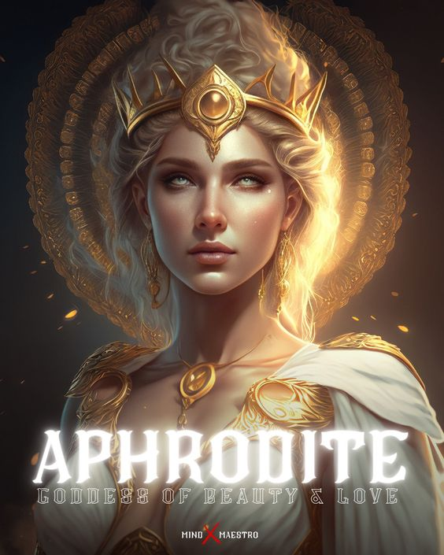Lujuriosa y llena de pasión, así es la Diosa Afrodita. Esta deidad gobierna sobre todo lo relacionado al sexo y la reproducción. Nace producto del esperma del titán griego Urano, a quien Cronos le cortó los testículos. Emerge del mar directamente como adulta, siendo deseada por muchos hombres desde el primer momento. Por temor de un conflicto en el Olimpo, Zeus decide que sea Hefesto quien se queda con Afrodita, pero la Diosa nunca deseó estar con él, y sería Ares quien calmara los intensos deseos sexuales de Afrodita. Hefesto, tras el enfado y la deshonra que representó el adulterio cometido por Afrodita, se quejó ante los Dioses del Olimpo, pero estos hicieron caso omiso de sus reclamos, y sintieron envidia de Ares.
★━━━━━ historias ━━━━━★
Villana en una historia mal contada
En la mitología griega, Medusa era originalmente una virgen deslumbrantemente bella, la aspiración celosa de muchos pretendientes y principalmente Poseidon el dios del mar, por lo que despues de varios rechazos por parte de Medusa el tomo la decision de violarla en el templo de Atenea, este acto ofendio mucho a la diosa y está dudando de Medusa y sin encontrar ningún error en Poseidón la transformó en un monstruo e hizo que su cara fuera imposible de contemplar nuevamente, la transformó en una Gorgona.
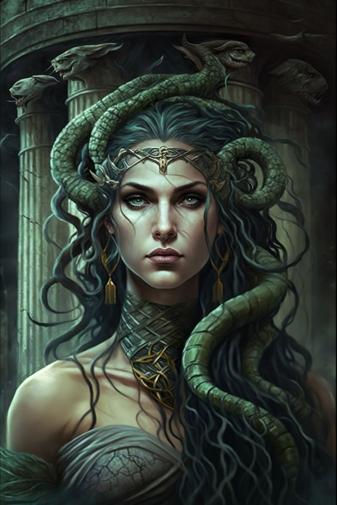Viaje sin retorno?
Medusa habitaba junto a sus hermanas en una cueva en el último lugar al que se dirigía la noche. Allí la fue a buscar el héroe Perseo, nieto de Zeus e hijo de Dánae, por orden del rey Polidectes. Este último pretendía a la madre de Perseo como esposa, pero el héroe no aprobaba la unión, así que el rey lo envió a traerle la cabeza de la Medusa como obsequio de bodas, con el fin de sacárselo de encima. Perseo, sin embargo, recibió la ayuda de distintos dioses. Entre ellos, Atenea le entregó un espejo de bronce tan perfectamente pulido que servía como espejo, para que pudiera observar el reflejo de Medusa y así no convertirse en piedra; y también el famoso casco de invisibilidad de Hades, con el que luego podría escapar. De esta manera, el héroe se infiltró en la cueva del monstruo y de un tajo certero le cortó a Medusa la cabeza, la guardó en un saco y tornándose invisible, escapó a toda prisa de la venganza de las gorgonas. De la sangre derramada por Medusa nacieron el gigante Crisaor y el caballo alado, Pegaso. Armado con la cabeza del monstruo, Perseo emprendió distintas aventuras: tornó en piedra al titán Atlas, quien sostenía la bóveda celeste, rescató a la princesa Andrómeda del monstruo marino Cetis, y finalmente se vengó del rey Polidectes. Finalmente, el héroe entregó a la propia Atenea la cabeza cercenada de Medusa, quien la puso a partir de entonces en su escudo, como un emblema protector.
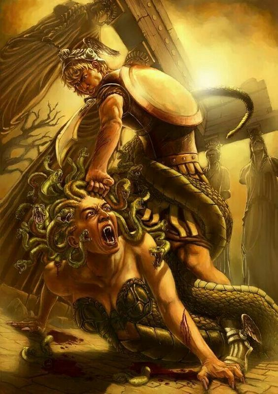Las tareas de hercules
Los 12 trabajos de Hércules, son un conjunto de tareas que el héroe cumplió al servicio del rey de la Argólida, Euristeo. Estos fueron los trabajos:
Matar al león de Nemea, Matar a la hidra de Lerna, Capturar al jabalí de Erimanto, Capturar a la cierva del monte Cerinea, Echar a los pájaros del Estínfalo, Asear los establos de Augías, Capturar al toro de Creta, Obtener el cinturón de Hipólita, Robar las yeguas de Diómedes, Robar el ganado de Geriones, Obtener al can Cerbero y Robar las manzanas doradas del jardín de las Hespérides
¿Por qué Hércules debió cumplir estos trabajos? Hera sentía celos de Hércules por ser hijo de Zeus con una mortal y, para perjudicarlo, favorecía a Euristeo. Un día, Hera indujo a Hércules a la locura para que asesinara a su esposa, hijos y sobrinos. Los trabajos constituyeron a la vez una purga de sus culpas y una forma de obligar a Hércules a reconocer la autoridad de Euristeo.
Titanomaquia
El inicio de la titanomaquia según Hesíodo sucedió porque la guerra ya había sido predicha por Urano; quien era el principal Dios que gobernaba los cielos, cuando fue derrocado por su hijo Crono. Aparentemente, ya Urano había pronosticado que alguien de su generación lo derrocaría, así como él mismo lo había hecho en una ocasión con su padre. Tiempo después, Crono ocupó el puesto de su padre y engendró con su hermana Rea seis hijos, los cuales eran: Poseidón, Hera, Hestia, Hades, Deméter y Zeus. Zeus fue ocultado por su madre mientras que los demás fueron posteriormente devorados por su padre. Zeus fue escondido en la isla de Creta, en donde fue criado por dos ninfas: Ida y Adrastea. Más adelante, cuando Zeus creció, se encargó de liderar a sus seguidores hacia el monte Otris, lugar que era habitado por titanes. Zeus se hizo acompañar también por un gran número de hecatónquiros y cíclopes, los cuales habían pasado muchos años encerrados por Cronos, en las profundidades. En agradecimiento, fabricaron armas tales como el rayo de Zeus, el tridente del Poseidón y el casco de invisibilidad de Hades. Cuando la guerra terminó y triunfaron, Zeus gobernó la tierra, Poseidón fue rey de los mares y Hades del inframundo.
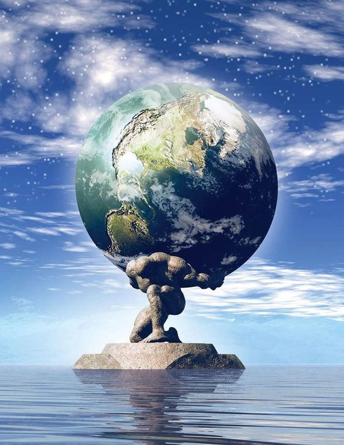